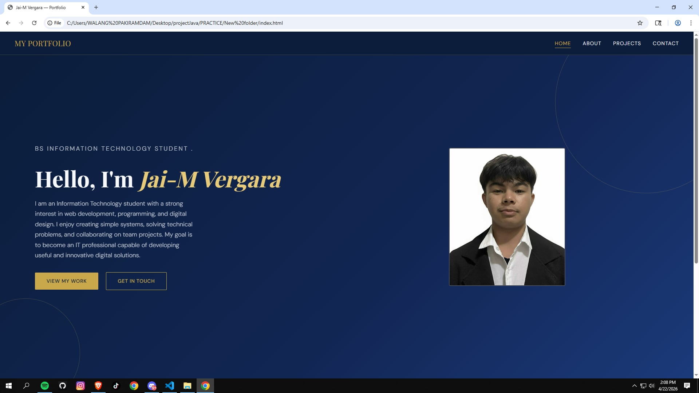

01 PERSONAL WEBSITEPersonal Portfolio Website
Designed and developed a multi-page personal website applying HCI principles including usability, accessibility, and responsive design. Deployed using GitHub Pages with a custom domain.
View Project →